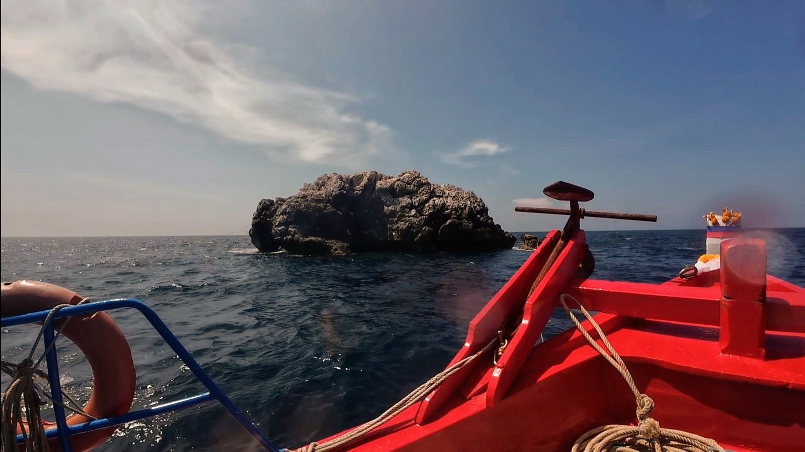
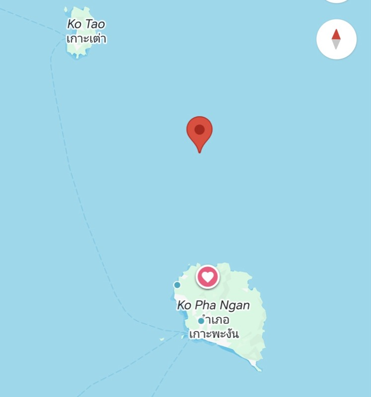

Home / Dive sites
Dive sites of
Koh Phangan
Daily departures at 9:30 from Chaloklum, in small groups, on our own boat. Four sites, all reachable from the same pier — and when conditions allow, certified divers get more than one of them in a day.

Sail Rock · 5–40 m · one hour out
All levels · beginner to advanced
Sail Rock
The famous open-sea pinnacle, and the reason people come to this side of the Gulf. It rises from 40 metres to above the surface, and a vertical tunnel — The Chimney — runs up through the middle of it. Schools of barracuda and batfish hold in the blue off the walls, and with luck, a whale shark comes through.
It is the best diving in the Gulf of Thailand, and a must-do. Because we leave at 9:30, we tend to arrive as the early boats are leaving.
- Depth
- 5–40 m
- Travel
- 1 hour
- Level
- All
- Current
- Variable
- The Chimney — a vertical swim-through
- Barracuda and batfish schools
- Whale sharks, seasonally and with luck
- Open Water training dives run here

Koh Ma · 5–18 m · no current
Beginners · try dives · Open Water courses
Koh Ma
Ten minutes by boat from Chaloklum, with no current and a genuinely healthy hard-coral garden. Green turtles graze here, clownfish hold their anemones, and cuttlefish hover over the sand watching you watch them. This is where your first perfect dive happens.
- Depth
- 5–18 m
- Travel
- 10 min
- Level
- Beginner
- Current
- None
- Green turtles
- Clownfish and anemones
- Cuttlefish over the sand
- Healthy hard coral

Little Sail Rock · 8–20 m
Intermediate to advanced · possible current
Little
Sail Rock
A mini version of Sail Rock, ten minutes east of Chaloklum. Far fewer divers get here and there is just as much life on it — giant groupers sitting in the overhangs, moray eels in the cracks, and schools of fusiliers moving over the top. The secret jewel for escaping the masses.
- Depth
- 8–20 m
- Travel
- 10 min
- Level
- Intermediate
- Current
- Possible
- Giant groupers
- Moray eels
- Schools of fusiliers
- Rarely crowded

Oil Platform · 10–30 m · 20+ dives
Advanced only · 20+ logged dives
Oil
Platform
An artificial structure standing alone in open water, with its legs dropping away into the blue. Everything in the area uses it as shelter, so you descend into enormous schools of jacks and barracuda with groupers parked underneath. It is the most different and most adrenaline-pumping dive in the Gulf.
Because of the depth and the open water around it, this one is for advanced divers with at least 20 dives logged.
- Depth
- 10–30 m
- Level
- Advanced
- Requires
- 20+ dives
- Type
- Structure
- Huge schools of jacks
- Barracuda in numbers
- Groupers holding under the legs
- Customer favourite alongside Sail Rock
On the chart
Everything from
one pier
We run out of Chaloklum on the north coast of Koh Phangan — the closest working pier to Sail Rock, which sits in open water between Koh Phangan and Koh Tao.

The shop · Chaloklum, Moo 7

Sail Rock · open sea, one hour out
Which site
should you dive?
Tell us your level and we will tell you where the day should go. Conditions change, and the honest answer sometimes is "not Sail Rock today".